Naše kostely
Kostely jsou místy setkání s Bohem i s druhými.
Jsou otevřeny pro modlitbu, bohoslužby i tiché zastavení.
Ostrov – kostel sv. Michaela
Farní kostel zasvěcený archandělu Michaelovi stojí v srdci Ostrova. Je hlavním místem bohoslužebného života farnosti.
Více informací →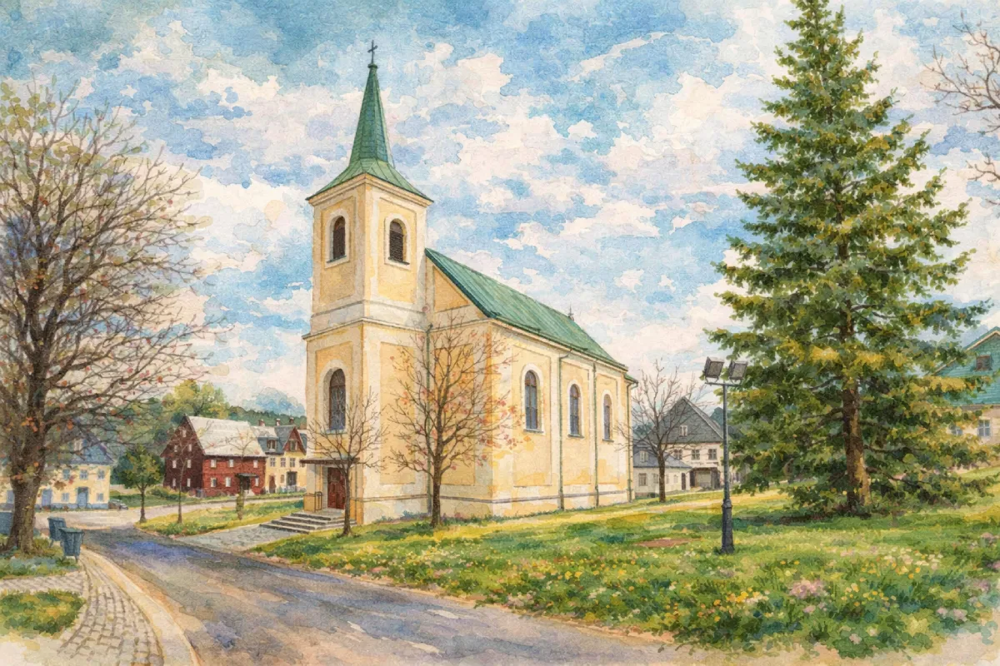
Boží Dar – kostel sv. Anny
Pozdně barokní kostel z roku 1771 ve svahu nad Božím Darem. Uvnitř vzácná renesanční křtitelnice a bohatý řezbářský interiér.
Více informací →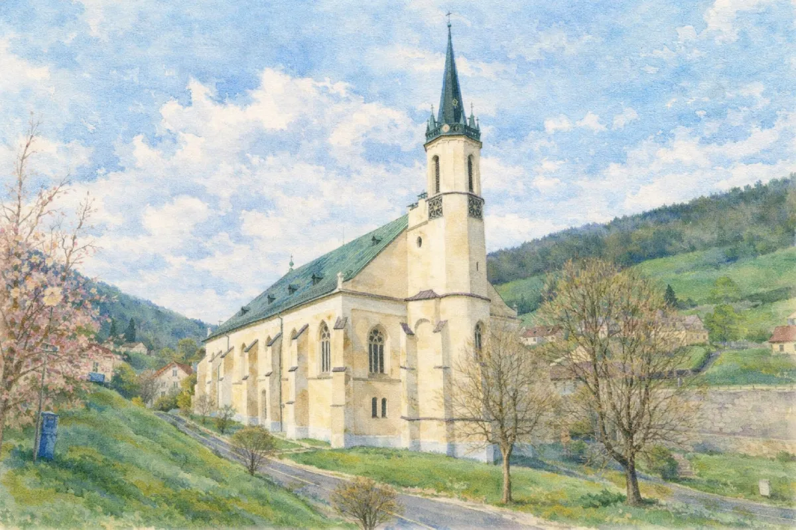
Jáchymov – kostel sv. Jáchyma
První luteránský kostel v českých zemích, postavený roku 1534–1540. Renesanční portály, pseudogotický interiér a statut poutního místa.
Více informací →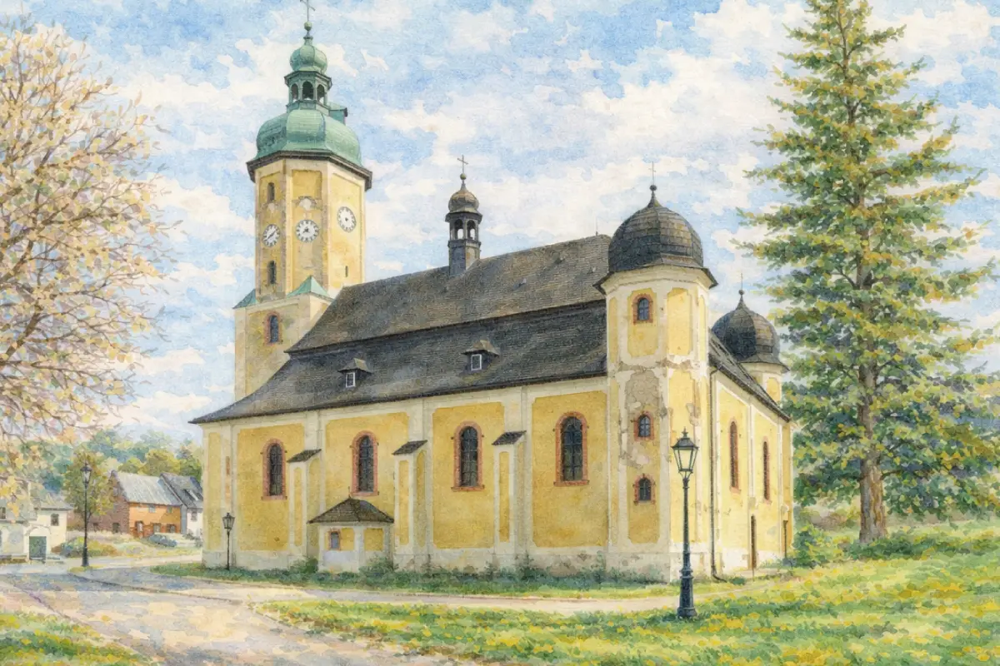
Horní Blatná – kostel sv. Vavřince
Renesanční kostel z roku 1594 s barokní přestavbou. Vzácná cínová křtitelnice z roku 1544, malovaný prkenný strop a rokoková kazatelna.
Více informací →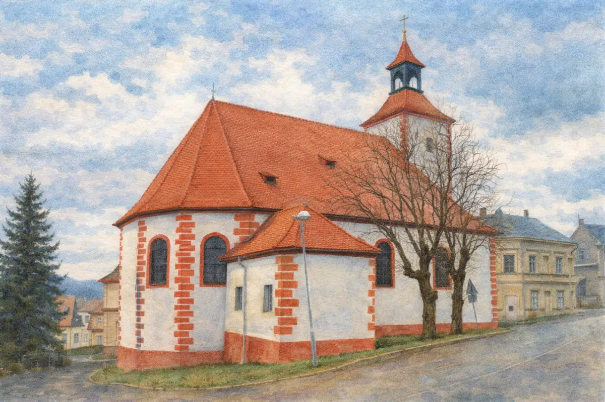
Abertamy – kostel Čtrnácti sv. pomocníků
Raně renesanční kostel z roku 1534, barokně přestavěný v letech 1735–1738. Vzácný kazetový strop, pozdně gotické sochy a varhany z roku 1885.
Více informací →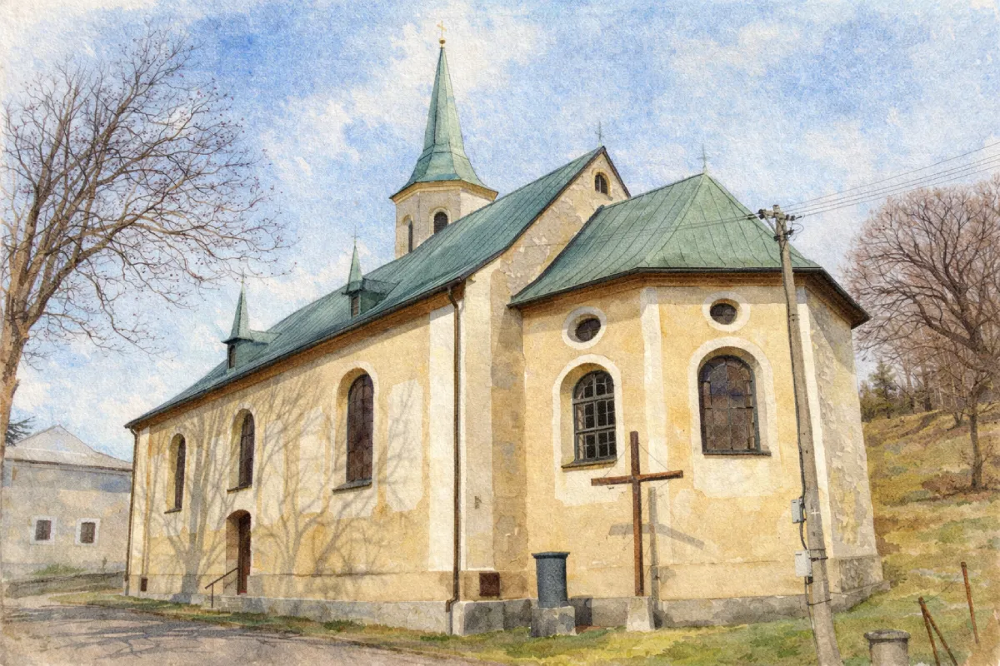
Pernink – kostel Nejsvětější Trojice
Barokní chrám z let 1714–1716 na místě staršího dřevěného kostelíka. Rokokové oltáře, křtitelnice ze 17. století a sousoší Olivetské hory.
Více informací →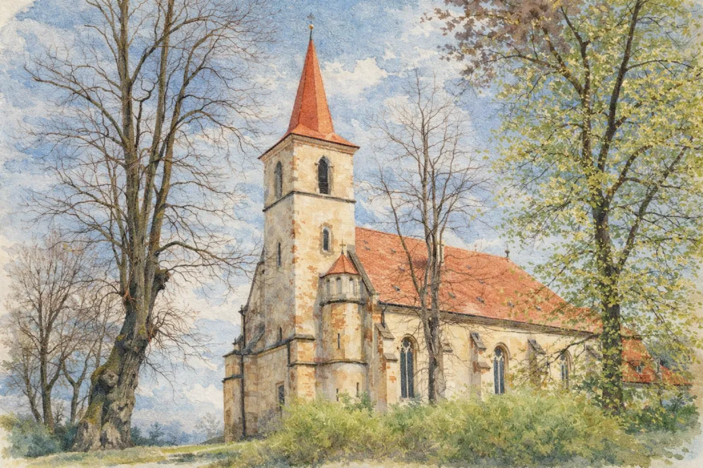
Velichov – kostel Nanebevzetí Panny Marie
Nejvýznamnější pseudogotická památka Karlovarska z roku 1895. Vitrážová okna, polychromovaný kazetový strop a každoroční polní bohoslužba 15. srpna.
Více informací →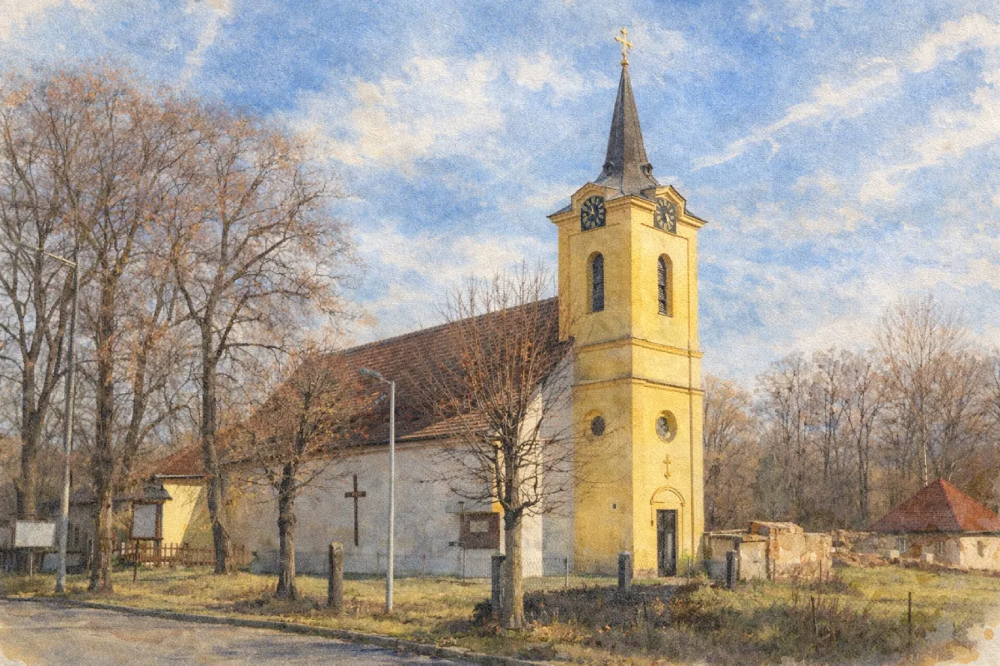
Bor – kostel sv. Máří Magdalény
Raně gotický kostel z roku 1260 s vzácnými nástěnnými malbami a gotickým zvonem Gloria před rokem 1400 — jeden z nejstarších sakrálních objektů regionu.
Více informací →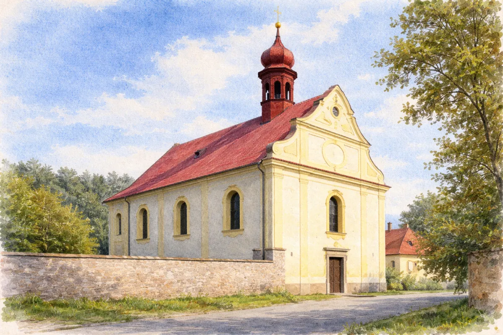
Děpoltovice – kostel sv. Michaela Archanděla
Barokní chrám z roku 1787 s trojdílným průčelím a vzácným zvonem z roku 1576. Interiér od sochaře Wenzela Lorenze, sakristie z původního renesančního kostela.
Více informací →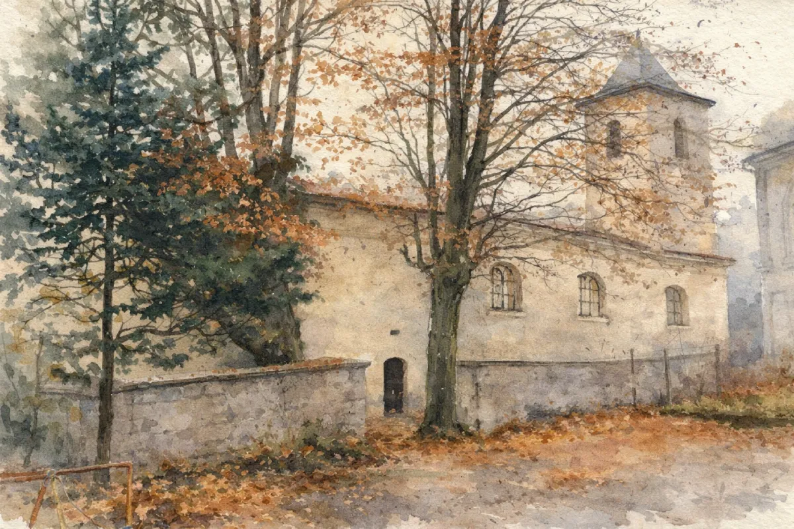
Krásný Les – kostel sv. Petra a Pavla
Barokní kostel s otevřenou lodí pod nebem a křížovou cestou. Zvon z roku 1576, požárem pročištěný prostor, který kardinál Tomášek znovu vysvětil roku 1987.
Více informací →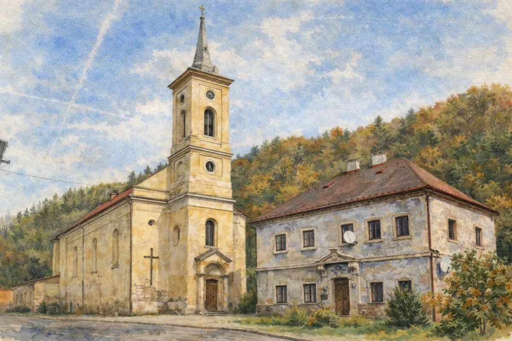
Radošov – kostel sv. Václava
Gotické základy z roku 1352, barokní přestavba a klasicistní věž. Sedm století dějin v jedné stavbě — s varhanami od Martina Zause a sochou sv. Václava v presbytáři.
Více informací →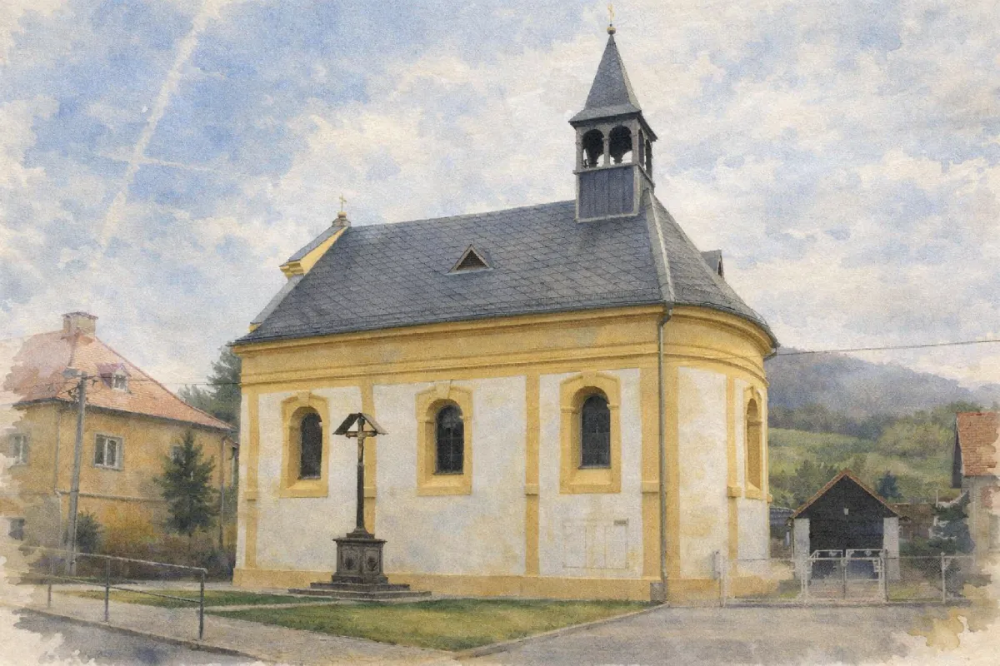
Stráž nad Ohří – kostel sv. Michaela Archanděla
Pozdně barokní kostel z roku 1768 postavený z milodarů poutníků, zachráněný v roce 2009 díky solidaritě obce a Řádu sv. Lazara Jeruzalémského.
Více informací →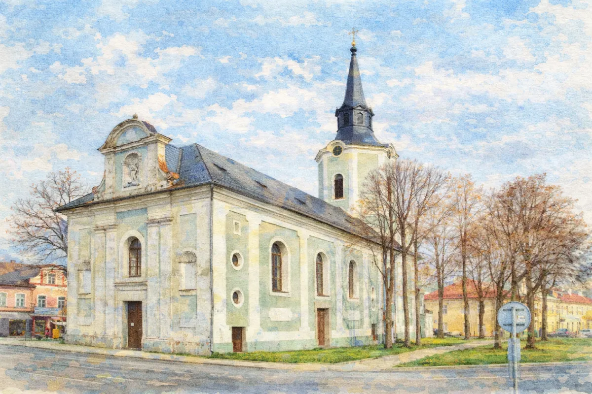
Hroznětín – kostel sv. Petra a Pavla
Farní kostel sv. Petra a Pavla stojí na náměstí v Hroznětíně od roku 1217. Dominuje mu osmiboká věž a uvnitř skrývá vzácný barokní kalich z roku 1734.
Více informací →